Systems thinking aterrizado en la realidad operacional
Hola.
Soy Francisco Cobos y durante más de 20 años he trabajado entre operaciones, logística, tecnología, hospitalidad, plataformas y ecosistemas TravelTech, moviéndome siempre en entornos donde complejidad, negocio y ejecución se cruzan constantemente.
Este espacio recoge parte de ese recorrido.
🐢 Poc a Poc — Slow Enough to Think. Fast Enough to Move.
También puedes encontrar algunos de mis artículos en
Medium
y explorar reflexiones y observaciones más breves en
Fragments.
Espacio visual para fotografías, proyectos, experiencias y momentos relevantes.
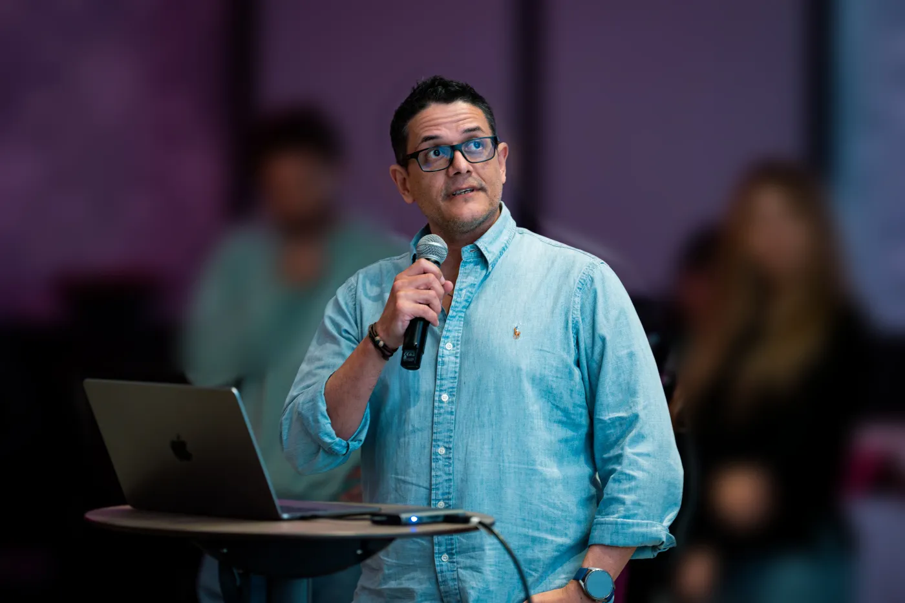
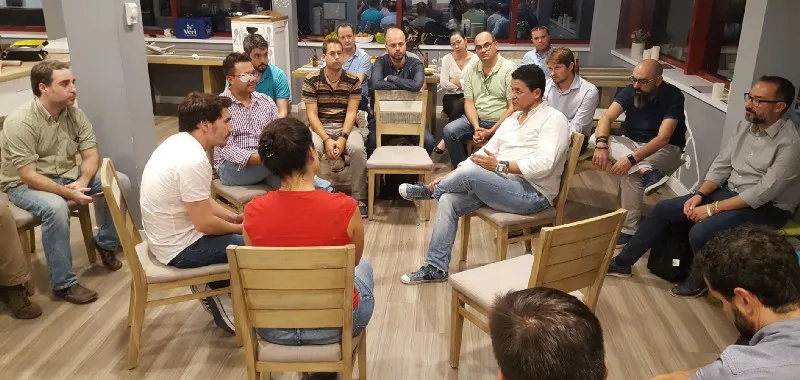
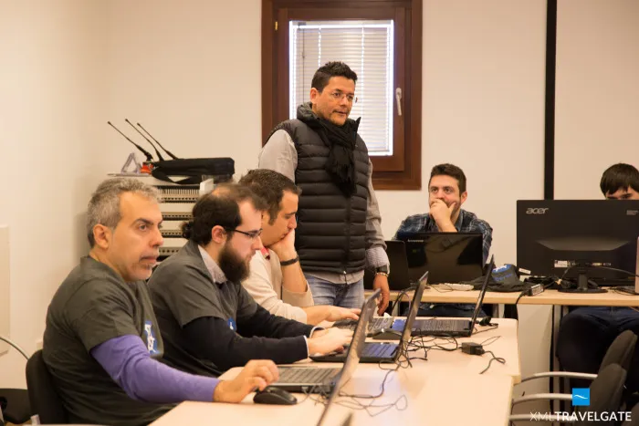
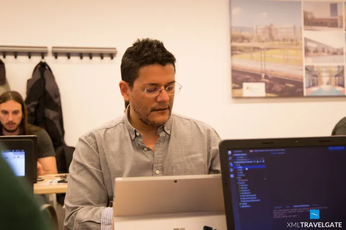
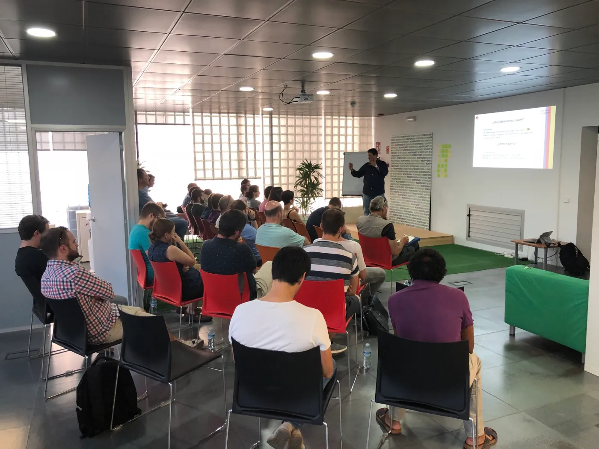
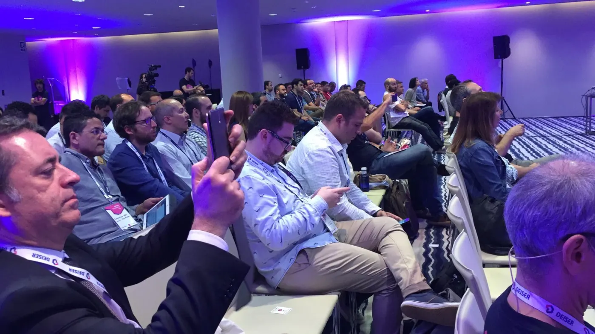
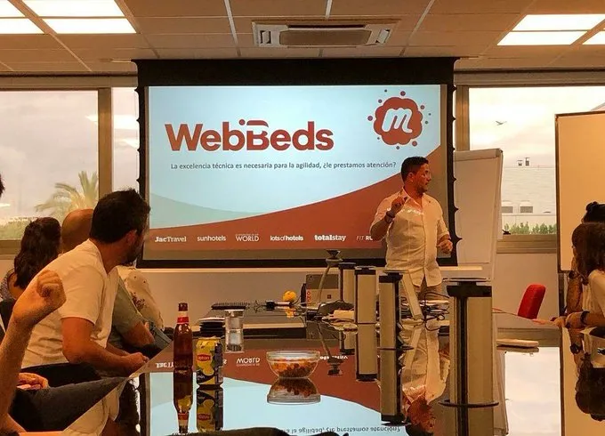
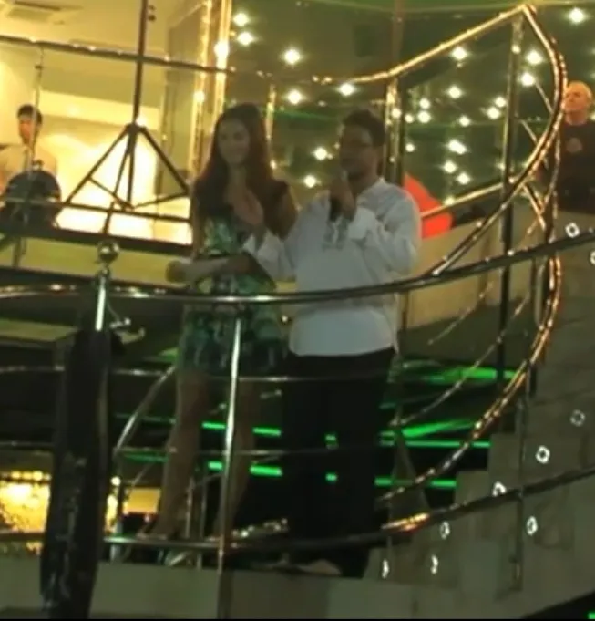
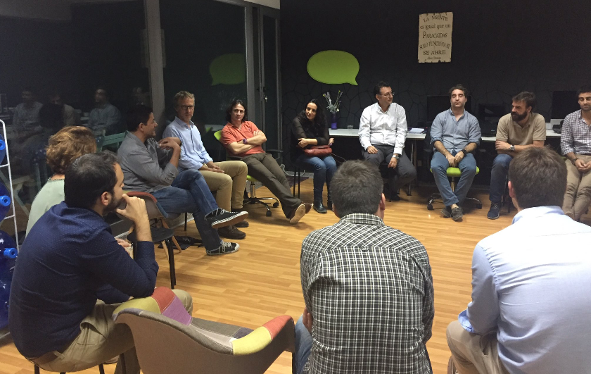
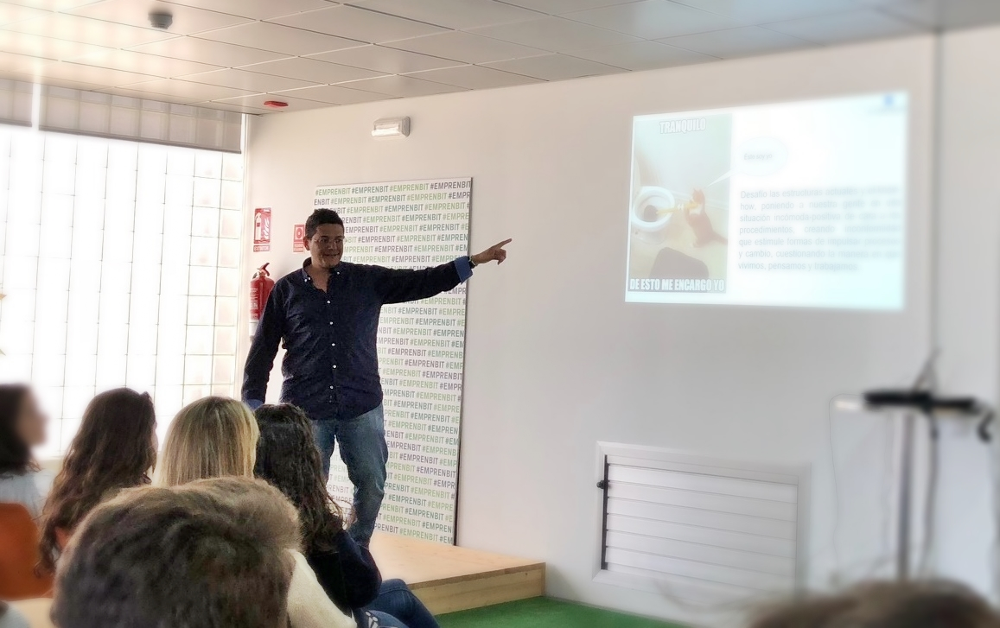
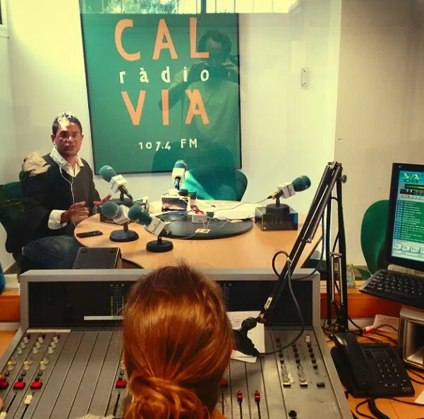
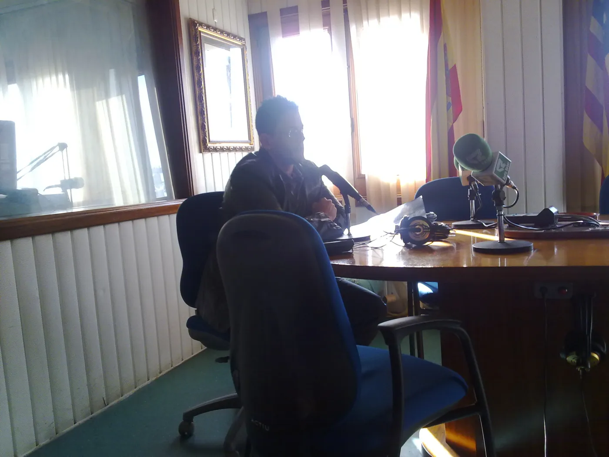
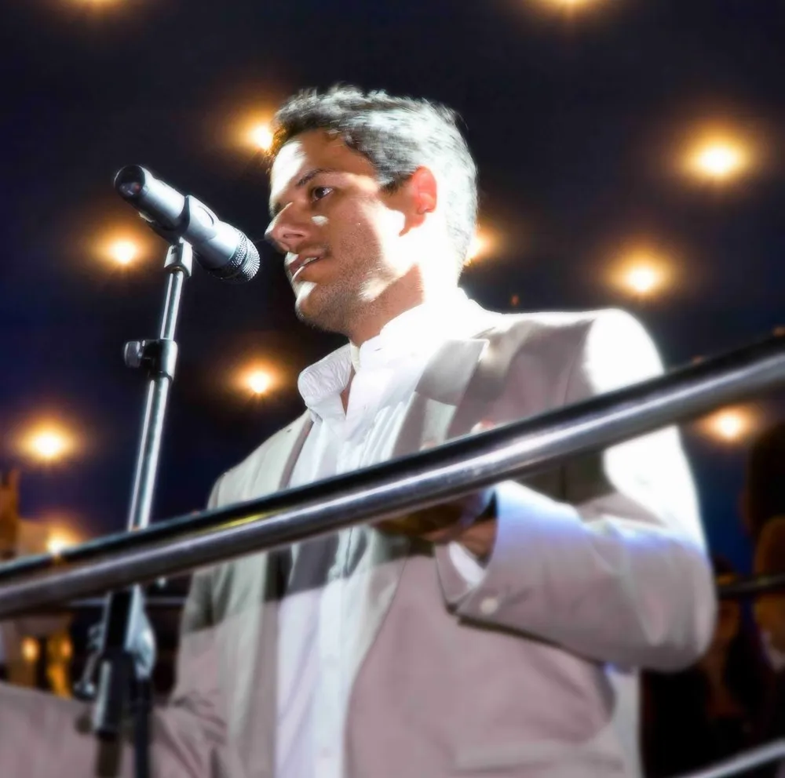
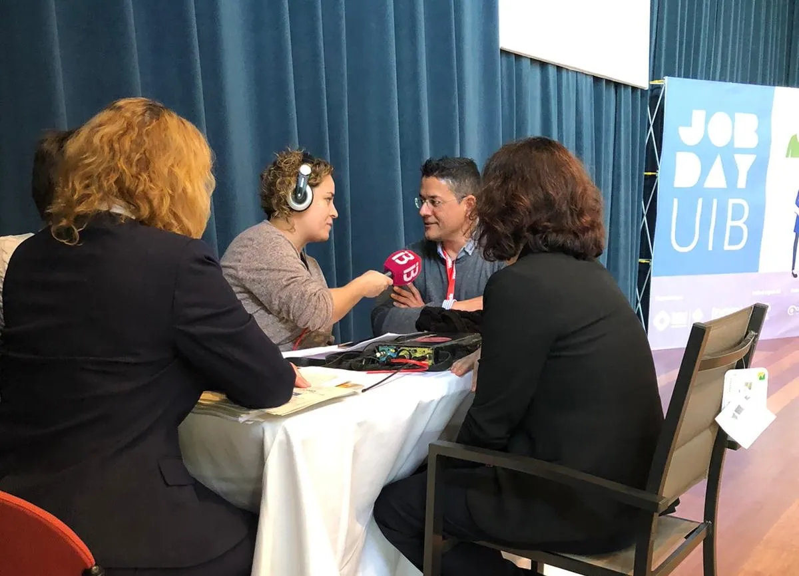
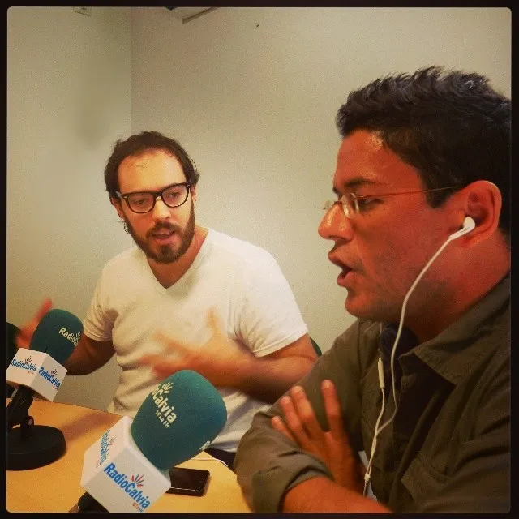
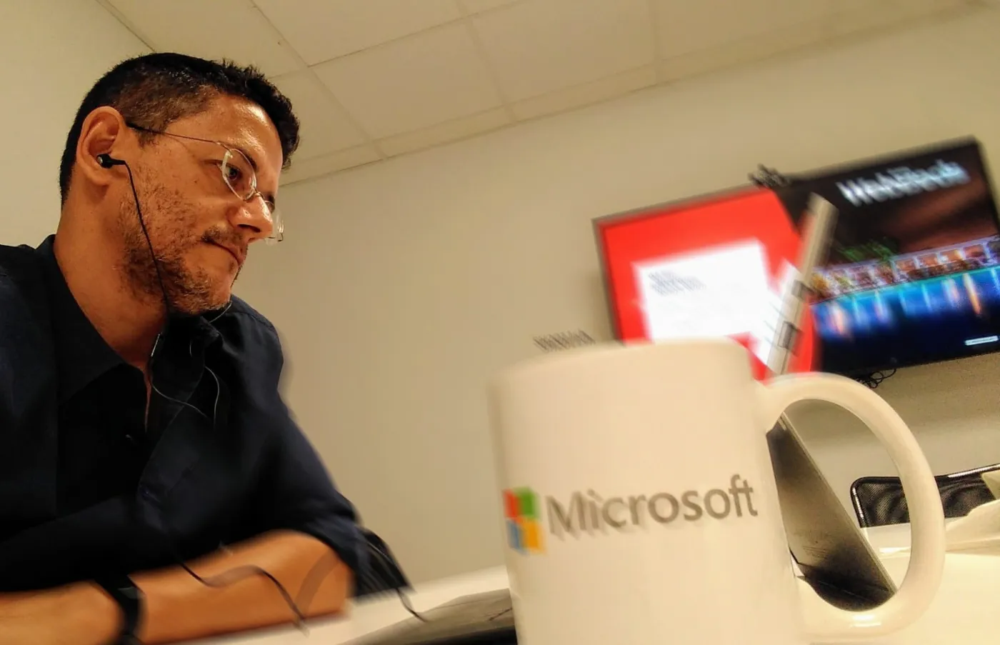
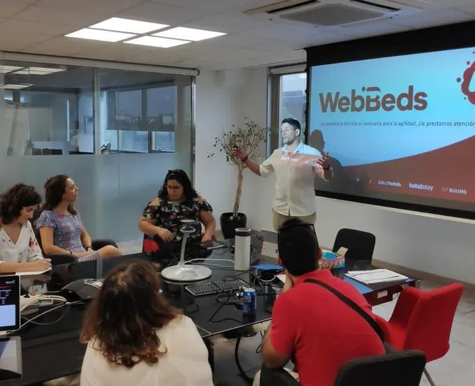
A lo largo de mi trayectoria he trabajado en entornos muy distintos: industria, transporte, logística, turismo, marketplaces, startups, producto, operaciones y grandes ecosistemas tecnológicos internacionales.
Mi carrera nunca siguió un camino tradicional ni encajó completamente dentro de una sola categoría. Y quizá precisamente por eso terminé desarrollando una visión muy transversal sobre organizaciones, operaciones y sistemas complejos.
Antes de trabajar en plataformas y tecnología, crecí muy cerca de operaciones reales: transporte industrial, logística, mantenimiento, coordinación, dependencias, ejecución.
Mucho antes de escuchar términos como “transformación organizativa” o “systems thinking”, ya convivía con sistemas donde pequeños errores podían afectar operaciones completas.
Con el tiempo, esa forma de observar complejidad evolucionó hacia entornos de producto, delivery, TravelTech y transformación organizativa.
Hoy me interesa especialmente la intersección entre:
Creo profundamente en:
También creo que gran parte de los problemas organizativos no provienen necesariamente de la tecnología, sino de:
Este blog no pretende ser un espacio de “gurús”, fórmulas mágicas o teorías perfectas.
🐢 Poc a Poc — Little by Little